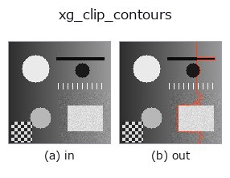

xldgeom op• 数据种类:contour → contour
• 调用:fullseye.apply(img, "xg_clip_contours", a=0.5, b=0.5)(2-D 的模型是一张图 + 两个标量旋钮 a,b∈[0,1])

*图为在 128×128 合成输入上实际运行的输出。左为输入，右为输出。点云以俯视散点显示(亮度 = z)，一维序列为折线，体数据为沿 z 的最大值投影，视频为中间帧，复数图像为幅值；无法成像的返回值直接显示数值。*
扫描旋钮 a(0.1 / 0.5 / 0.9，另一旋钮取默认):
▸ xg_clip_contours: knob a sweep (docs site)
*旋钮 b 不改变输出(实测: 0.1 / 0.5 / 0.9 相同)。*
阶段(前置算子 → 本算子，从左到右):
▸ xg_clip_contours: stages (docs site)
换别的图像(合成场景 / 照片 / 硬币。上排为输入，下排为对应输出。旋钮取默认):
▸ xg_clip_contours: other inputs (docs site)
丢弃折线长度低于 a × 最长的 contour(a 在 [0,1])。
> 以下的详细说明为原文 —— 摘要与标题已翻译。
各輪郭の折れ線長(隣接点間のユークリッド距離の和)を求め、最長の輪郭の長さ
`L_max に対して length >= a * L_max を満たす輪郭だけ残す。a` は
[0,1] に clip され、`a=0 で全輪郭を残し、a=1` で最長の輪郭(同長なら
複数)だけ残す。`b` は未使用。
返り値は入力と同じ `{"shape", "cs"}` 形式の輪郭辞書(点配列はコピー)。
輪郭が無ければ `cs は空。L_max <= 1e-12`(全輪郭が 1 点)なら全輪郭を
そのまま返す。しきい値が画像サイズでなく「最長輪郭に対する相対値」なので、
最長の輪郭が変わると選別基準も動く(点数の絶対値で選ぶなら
`select_contours_xld`)。名前から想像される矩形での切り取りではなく、
長さによる選別である(矩形で切るのは `xg_crop_contours / hx_clip_contours`)。
閉輪郭の重複終点も長さに含むが、0 長の辺なので影響しない。
• 示例数据目录(下载 URL / 许可证) —— 2-D 用 skimage.data(BSD/公有领域)加合成图,3-D 给出真实数据源(Stanford/PDS 等)的下载 URL。
• 算子来历与参考文献 —— 该算子族所依据的研究/方法出处。
• 算法的正典(作者・年份)与用途见上面的族使用指南。
下面的程序已确认可以运行(与图相同的输入)。在 Studio 帮助中，此块会变成按钮，可当场加载并运行。
threshold 0.50 0.50 sk_find_contours 0.50 0.50 xg_clip_contours 0.50 0.50
▸ Load this pipeline · Load & run
• gallery2d_geometry — py -3.11 examples/gallery2d_geometry.py
contour 作为输入)identity · select_contours · smooth_contours · fit_line_contours · contours_to_region · count_contours · total_length · select_contours_xld
xldgeom)xg_moments · xg_area_center · xg_eccentricity · xg_orientation · xg_elliptic_axis · xg_height_width_ratio · xg_regress_contours · xg_gen_polygons
*Provenance: ops.py — 2D 算子登记表。本条目由 tools/opdocs.py md 自动生成(请勿手工编辑)。*
© 2026 Kazufumi Furuse — Fullseye operator documentation. Licensed under Apache-2.0.
{kind=link}
{kind=link}
{kind=link}